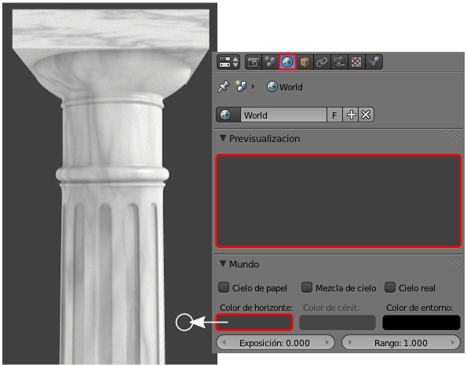
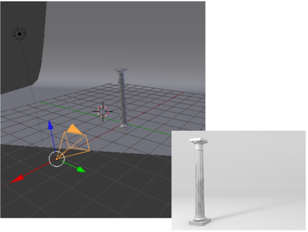
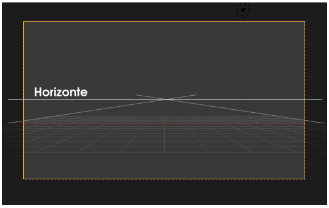
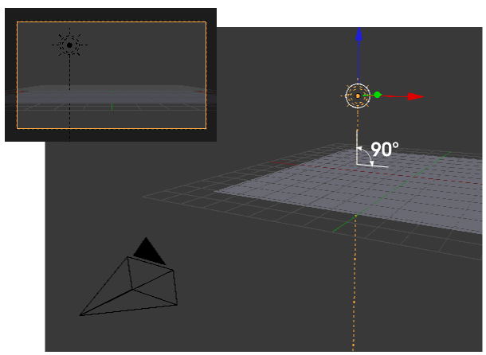
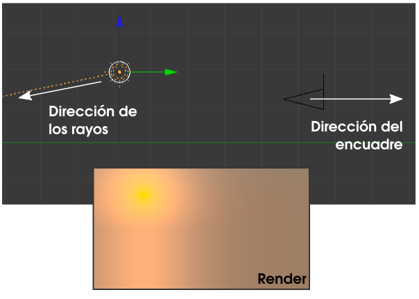
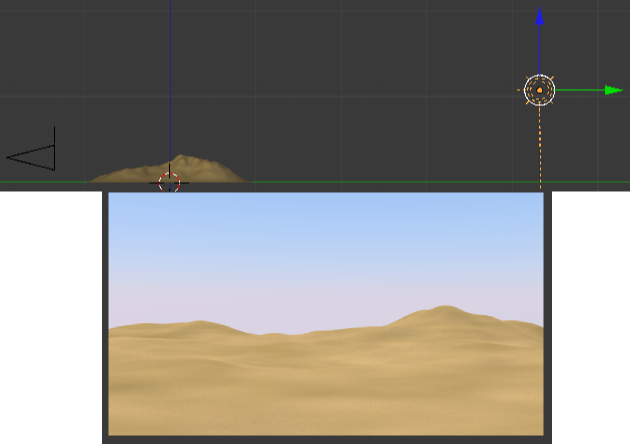
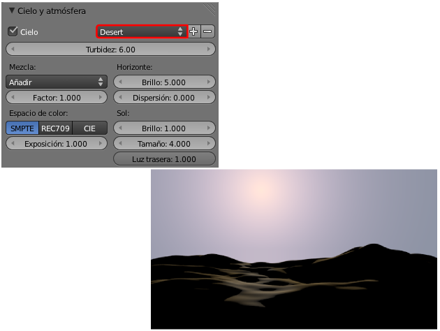
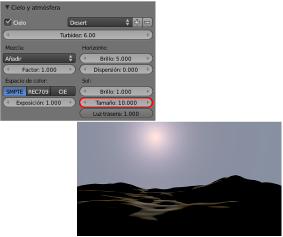

Cielo y sol
En todos los renders que hemos hecho hasta ahora optábamos por una de estas dos posibilidades:
- Que saliera el color del Mundo (gris por defecto). Ese color es editable en el gran rectángulo Color de horizonte.

- Poner un plano editado para dar la sensación de que no termina nunca.

Pero vamos a profundizar en la creación de cielos para nuestras escenas.
Contamos con un modelado que simula unas dunas. Además necesitamos una lámpara de tipo Sol  y la cámara colocada adecuadamente. Vamos a concretar esto último:
y la cámara colocada adecuadamente. Vamos a concretar esto último:
- La cámara estará orientada teniendo en cuenta el horizonte determinado por el plano XY del entorno 3D y simbolizado por la rejilla. En otras palabras: el cielo será coherente con el entorno 3D.

- La lámpara Sol
 no sólo se sitúa en el lugar adecuado en el encuadre sino que la orientación de sus rayos debe ser muy meditada. Por ejemplo, el hecho de que la lámpara se vea a través de la cámara, no significa que sea vista por ella. Supongamos que el sol está en el encuadre pero que sus rayos son verticales al plano XY de la rejilla; eso quiere decir que es mediodía y que el sol se encuentra en el cenit, sobre nuestras cabezas. Esto no es malo en sí, pero debemos tener en cuenta que el sol no aparecerá en el render porque es físicamente incorrecto.
no sólo se sitúa en el lugar adecuado en el encuadre sino que la orientación de sus rayos debe ser muy meditada. Por ejemplo, el hecho de que la lámpara se vea a través de la cámara, no significa que sea vista por ella. Supongamos que el sol está en el encuadre pero que sus rayos son verticales al plano XY de la rejilla; eso quiere decir que es mediodía y que el sol se encuentra en el cenit, sobre nuestras cabezas. Esto no es malo en sí, pero debemos tener en cuenta que el sol no aparecerá en el render porque es físicamente incorrecto.

En realidad el hecho de que el sol se vea a través de la cámara es intrascendente si la dirección de los rayos le dicen a Blender que haga otra cosa. Un simple ejemplo estrambótico pero esclarecedor. En esta escena se verá el sol en el render a pesar de estar detrás de la cámara porque la dirección de los rayos dice que vienen hacia nosotros (mostramos el render a pesar de no haber explicado aún cómo hacer que se renderice el cielo).

¿Cómo hemos conseguido en este último render que en lugar de ese fondo gris neutro del Mundo aparezca un cielo amarillento del atardecer/amanecer?. Muy sencillo: activando la opción Cielo en la botonera Cielo y Atmósfera siempre que esté seleccionada la lámpara Sol  .
.
Con la lámpara Sol  en la posición adecuada y una inclinación de los rayos casi horizontales este es nuestro primer render.
en la posición adecuada y una inclinación de los rayos casi horizontales este es nuestro primer render.
El color del cielo
El color amarillento no es casualidad. Blender se comporta casi de un modo inteligente en ese sentido. Si los rayos fueran perpendiculares al suelo este sería el resultado.
Estos colores son editables pero nosotros nos conformamos con lo valores por defecto.
En la botonera Cielo y atmósfera nos facilitarnos la vida diciéndole a Blender que determine los parámetros de fábrica para un desierto.
Son muchos los parámetros para experimentar y crear nuestra propia escena. De todos ellos nosotros editamos sólo Tamaño: 10.000, con lo que el disco solar se hace más evidente.

Si le echamos una mano a Blender dándole a la lámpara Sol  un color amarillento y añadiendo otra lámpara Semiesférica
un color amarillento y añadiendo otra lámpara Semiesférica  de color anaranjado este es uno de los posibles resultados que puede ofrecernos.
de color anaranjado este es uno de los posibles resultados que puede ofrecernos.